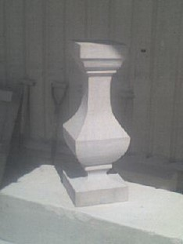
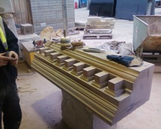

Originally, this was the cotton mill owned by scholar Robert Owen. The building only had three stories. The restoration commenced with the dismantling of the full existing building. The reconstruction process included the majority of door ways and window openings with new Rybats, cills, and lintols. The rubble infill was rebuilt using the original stone. The building restoration work was completed in 1994 with the addition of two extra stories to the building
This was the church attended by Mary Queen of Scots. The church lies opposite of the palace. My job was to remove decayed areas of stonework, then with new stone, carve and hew the stone to replicate was already there. Centuries of history being restored was an awesome experience.
Mostly worked in the Masonry yard as an apprentice cutting Arhes for to be built by others on the site.
CAD detail drawing: Created using Autodesk AutoCAD software.
Balluster Stone element.
CAD detail drawing: Created using Autodeck AutoCAD software.
Dental block Cornice stone.
CAD drawing on left converted to a 3d model on the right.
If you would like a quote or advice
Contact Me.